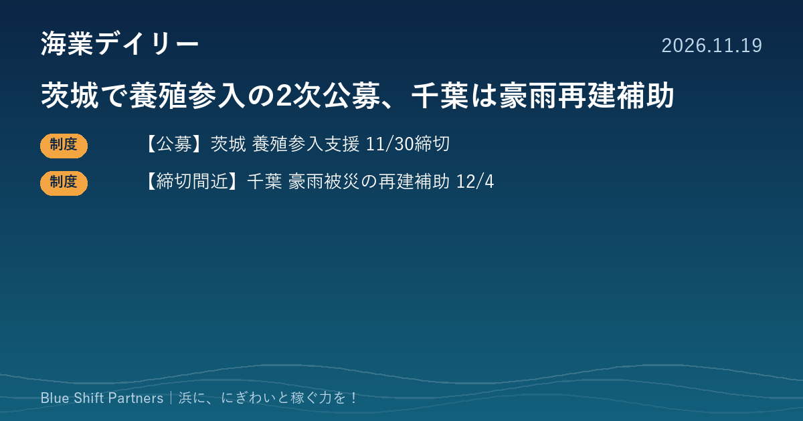

2026.11.19
茨城で養殖参入の2次公募、千葉は豪雨再建補助

本日は締切の迫る2つの制度をお届けします。茨城県が養殖への参入や規模拡大を支える補助金の2次公募を行っています。千葉県の8月豪雨で被災した小規模事業者向けの再建補助金は、1回目の締切が12月4日です。
【公募】茨城県「養殖参入支援事業補助金」2次公募、11月30日まで企画書を受付
茨城県が令和8年度の養殖参入支援事業補助金の2次公募を行っています。対象は県内の漁業者・養殖業者・水産加工業者・仲買人などの水産業者、そのグループ、水産業協同組合で、新たに養殖を始める事業、既存の養殖業者による新しい魚種や規模拡大、蓄養などが対象です。補助率は2分の1以内（霞ヶ浦北浦は3分の2以内）、上限は200万円（霞ヶ浦北浦は500万円。一部の事業は別の上限）で、施設費・種苗費・運営費などに使えます。11月30日（月）までに企画書を郵送（記録が残る方法）または事前相談した県機関へ提出する形で、提出前に担当機関への事前相談が必要です。
ここがポイント：漁船漁業や加工の本業と組み合わせて養殖・蓄養に取り組めば、水揚げの波をならし、直売所や飲食向けに安定して出せる魚を持てる可能性があります。締切まで日がないため、検討中の事業者は早めに事前相談先へ連絡するのが近道です。
出典：茨城県 農林水産部水産振興課「令和8年度茨城県養殖参入支援事業補助金（2次公募）」（2026-11-17）
【締切間近】千葉県「被災小規模事業者再建支援事業補助金」、1回目は12月4日17時まで
千葉県が、令和8年8月千葉豪雨で被災した県内の小規模事業者を対象に、施設の修繕、機械装置、設備の廃棄にかかる費用を補助しています。補助率は3分の2以内、上限100万円（下限10万円）です。申請は電子申請または郵送で、1回目の締切は12月4日（金）17時、2回目は令和9年1月中旬の予定とされています。
ここがポイント：豪雨で傷んだ直売所や食堂の設備、加工場の機械などの復旧に充てられる可能性があります。1回目に間に合わせるなら、残りはおよそ2週間です。
出典：千葉県 商工労働部経済政策課「千葉県被災小規模事業者再建支援事業補助金の申請受付を開始します」（2026-10-30）
制度は「使えるかどうか」を調べている間に締切が来てしまうことがよくあります。養殖も被災からの再建も、まずは担当窓口に一本連絡を入れて、対象になるかを聞いてみることが一歩目です。迷ったときの書類づくりは、私たちもお手伝いできます。